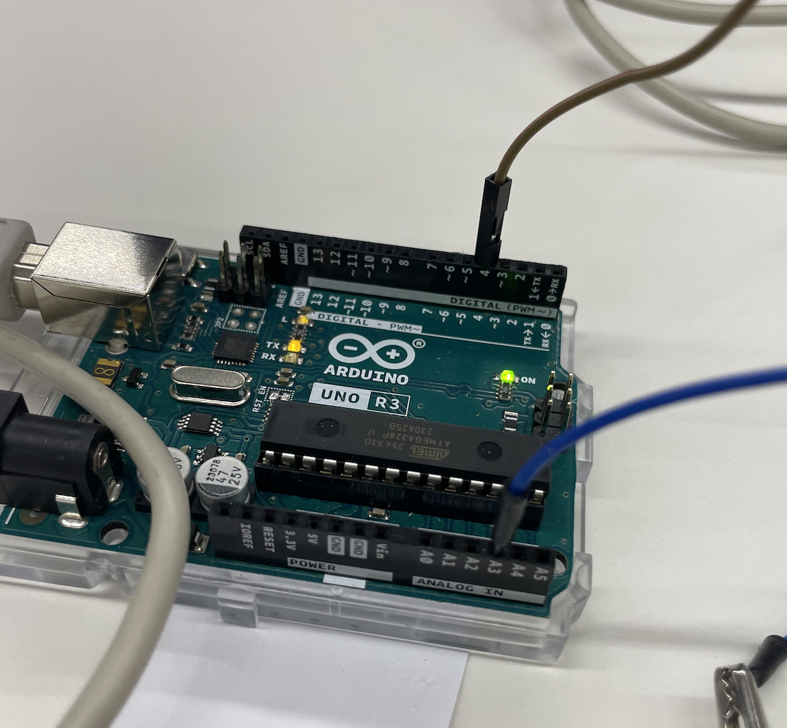
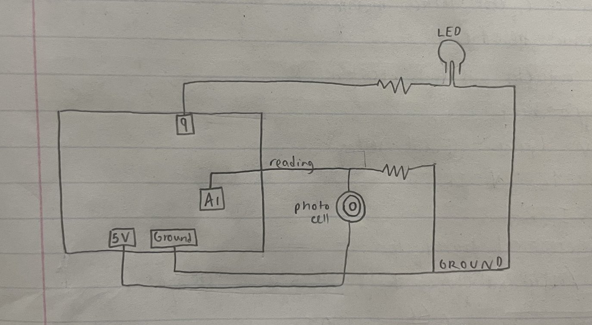

Since my final project has to be able to sense temperature, I decided to try to make an extremely rudimentary heat sensor using capacitive sensing. The capacitance of a capacitor--and hence, the voltage being passed through and read by the Arduino--depends on the distance between the two capacitors. I thus needed to find a substance to separate the capacitors that would vary in size based on its temperature. Since air expands when heated, I decided to use an inflated balloon and attach the capacitors to each side of it. The idea was that increased temperature would cause air inside the balloon to expand, thus increasing the distance between the two capacitors and decreasing the voltage being read by the Arduino. This was my setup:

Here is my schematic, as well as an image of the way my Arduino is set up.
Here is my code:
I tested/calibrated my sensor by holding a heat gun next to my balloon for a continuous period of time, and checking the voltage reading at various set intervals. The good news was that the values the sensor was reading did vary based on the amount of time the system was exposed to the heat gun. However, it did not vary as I expected: rather than the balloon expanding with increased heat, the balloon actually began to melt, which brought the two capacitors closer together. Thus, the voltage reading in fact increased the hotter it got. After 90 seconds of holding the heat gun up, the balloon had melted to the point where it was no longer possible to continue the calibration experiment.
Here is a plot of my data.
The relationship between the signals recorded by the microcontroller and the amount of time the heat gun was on seems to be linear. It would have been better to graph the reading of the microcontroller as a function of the temperature of the balloon; however, I did not have a way to measure the temperature, and so I used length of time the heat gun was on as a proxy for temperature. Most likely, the relationship of the microcontroller reading to the temperature itself would not be a linear relationship, because I doubt the balloon warms up linearly as a function of heat gun time.
My final project also has to be able to sense light, so for my second sensor I decided to set up a light sensor using a photoresistor. I also included an output device in the form of an LED that would light up according to the value being read by the microcontroller. Here is my setup:
Here is my schematic.
Thanks to a lot of much-appreciated help from Bobby, I finally figured out how to set up my Arduino code, including classes. Here it is:
I set up my code with two classes: one called LightSensor, which organizes all the code related to the photoresistor, and one called LED, organizing all the code related to the LED output. The LightSensor class essentially reads the voltage output of the photoresistor, and the LED class has an 'on' function and an 'off' function. My code is set up so that the lightbulb turns on when the photoresistor senses light above a certain threshold, and the bulb turns off when light is below that threshold. I realize now that it would make more sense for the lightbulb to turn on in low light, but I did not think of that at the time. Here is a video of the testing of the sensor.
I still have to prepare my CAD files for next week.